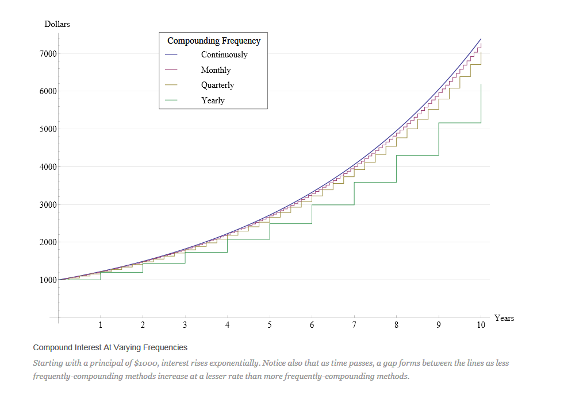

MATH 1830
Unit 2 Derivatives
2.P Review of Exponential and Logarithmic Functions
Notes
Three Rules for Logarithms
- Product Rule: $\ln \left( x*y \right)=\ln \left( x \right)+\text{ln}\left( y \right)$
- Example: $\ln \left( 3*5 \right)=\ln \left( 3 \right)+\text{ln}\left( 5 \right)$
- Quotient Rule: $\ln \left( x/y \right)=\ln \left( x \right)-\text{ln}\left( y \right)$
- Example: $\ln \left( 3/7 \right)=\ln \left( 3 \right)-\text{ln}\left( 7 \right)$
- Power Rule: $\ln {{x}^{y}}~=y\ln x$
- Example: $\ln {{2}^{8}}~=8\ln 2$
Three Specific Logarithms to Remember
- When x<0
- $ln(x)$ is undefined
- ${{\log }_{b}}(x)$ is undefined
- WHY?
- When x=0
- $ln(x)$ is undefined
- ${{\log }_{b}}(x)$ is undefined
- WHY?
- When x=1
- $ln(x)=0$
- ${{\log }_{b}}(x)=0$
- WHY?
Logarithm and Exponential Forms
-
Rewrite ${5^3} = 125$ in logarithm notation
${\log _5}125 = 3$
-
Rewrite ${\log _2}32 = 5$ in exponential notation
${2^5} = 32$
-
Rewrite $\log 10000 = 4$ in exponential notation
${10^4} = 10,000$
-
Rewrite $\ln 148.413159 \approx 5$ in exponential notation
${e^5} = 148.413159$
-
Rewrite ${e^2} \approx 7.389$ in logarithm notation
$\ln (7.389) \approx 2$
Review:
Solve the variable to 2 decimal places
-
$A = 4000{e^{0.06\left( 8 \right)}}$
$A = 6464.30$
-
$34000 = P{e^{0.076\left( 5 \right)}}$
$\frac{{3400}}{{{e^{0.076(5)}}}} = P$
$P = 23,251.29$
-
$9500 = 1200{e^{0.041t}}$
$\frac{{9500}}{{1200}} = {e^{0.041t}}$
$\frac{{95}}{{12}} = {e^{0.041t}}$
$\ln \frac{{95}}{{12}} = \ln {e^{0.041t}}$
$\ln \frac{{95}}{{12}} = 0.041t$
$\frac{\left( {\ln \frac{{95}}{{12}}} \right)}{0.041} = t$
$50.46 = t$
-
$4930 = 2250{e^{2.65r}}$
$\frac{{4930}}{{2250}} = {e^{2.65r}}$
$\frac{{493}}{{225}} = {e^{2.65r}}$
$\ln \frac{{493}}{{225}} = \ln {e^{2.65r}}$
$\ln \frac{{493}}{{225}} = 2.65r$
$\frac{\left( {\ln \frac{{493}}{{225}}} \right)}{2.65} = r$
$.30 = r$
-
$3 = \;{e^{0.07t}}$
$\ln 3 = \ln {e^{0.07t}}$
$\ln 3 = 0.07t$
$\frac{{\ln 3}}{{0.07}} = t$
$15.69 = t$
Review:
Solve for the variable without using a calculator.
-
$y = \;\ln {e^5}$
$y = 5$
-
${\log _5}x = \; - 3$
${5^{ - 3}} = x$
$\frac{1}{{{5^3}}} = x$
$\frac{1}{{125}} = x$
-
$\log_b5=\frac13$
$b^\frac13=5$
$\left(b^\frac13\right)^3=5^3$
$b = 125$
-
$s = \;{\rm{ln}}\left( e \right)$
$s = 1$
-
$y = \;\ln \left( {\ln e} \right)$
$y = \ln (1)$
$y = 0$
Use the Properties of Logarithms to Completely Expand the Term
-
$f(x) = \ln \left( {x{y^2}} \right)$
$f(x) = \ln x + \ln {y^2}$
$f(x) = \ln x + 2\ln y$
-
$g(x) = {\log _5}\left( {\frac{{25{x^3}}}{{4{y^7}}}} \right)$
$g(x) = {\log _5}(25{x^3}) - {\log _5}(4{y^7})$
$g(x)= {\log _5}25 + {\log _5}{x^3} - {\log _5}4 - {\log _5}{y^7}$
$g(x)= 2 + 3{\log _5}x - {\log _5}4 - 7{\log _5}y$
-
$h(x) = 5 + 7\ln \left( {\frac{2}{x}} \right)$
$h(x) = 5 + 7(\ln 2 - \ln x)$
$h(x)= 5 + 7\ln 2 - 7\ln x$
-
$f(x) = x - \ln \left( {ex} \right)$
$f(x) = x - (\ln e + \ln x)$
$f(x)= x - \ln e - \ln x$
$f(x)= x - 1 - \ln x$
Solve for x. Check for Extraneous Solutions.
-
${\log _2}\left( { - 8 + 4x} \right) = 4$
${2^4} = - 8 + 4x$
$16 = - 8 + 4x$
$24 = 4x$
$6 = x$
-
$\log \left( {{x^2} + 75} \right) = 2$
${10^2} = {x^2} + 75$
$100 = {x^2} + 75$
$25 = {x^2}$
$\pm 5=x$
-
$\ln \left( {{x^2} - 35} \right) = \ln \left( {2x} \right)$
${x^2} - 35 = 2x$
${x^2} - 2x - 35 = 0$
$(x - 7)(x + 5) = 0$
$x = 7\quad \quad x = - 5$ extraneous root
${\rm{x = 7}}$ is the only solution
2.1 Exponential and Logarithmic Function Applications
Introduction
Exponential functions occur frequently in science and business but are commonly used in compound interest applications.
- The value of a \$1000 investment returning 8% interest compounded monthly after 12 years would be calculated using the formula $$A=P\left(1+\frac rn\right)^{nt},$$
where A is the final amount in the account
P is the principal
r is the interest rate
n is the number of compounding periods per year
and t is the number of years.
- The compounding frequency has a significant impact on the final amount of money (either saved or owed). 
Our focus will be on continuous compounding:
- What is e?
- Irrational number (similar to $\pi $ )
- 2.718281828459…..
- Like $\pi $, e occurs frequently in natural phenomena
- Growth of bacterial cultures
- Decay of a radioactive substance
- Formal definition of e: $$e=~\underset{n\to \infty }{\mathop{\lim }}\,{{\left( 1+\frac{1}{n} \right)}^{n}}$$ $$\approx ~~2.718281829$$
Notes
Continuous Compounding Formula (appreciation and depreciation): $$A = P{e^{rt}}$$
CONTINUOUS COMPOUND INTEREST: Round all answers to two decimal places.
-
Hometown Bank offers a CD that earns 1.58% compounded continuously. If \$10,000 is invested in this CD, how much will it be worth in 3 years?
$A = 10,000{e^{.0158(3)}}$
$A = \$ 10,485.41$
The account will be worth approximately \$$10,485.41$ in three years.
-
Hometown Bank offers a CD that earns 1.58% compounded continuously. If \$10,000 is invested in this CD, how long will it take the account to be worth $11,000?
$11,000 = 10,000{e^{.0158t}}$
$\frac{{11,000}}{{10,000}} = \frac{{10,000{e^{.0158t}}}}{{10,000}}$
$\frac{{11}}{{10}} = {e^{.0158t}}$
$\ln \frac{{11}}{{10}} = \ln {e^{.0158t}}$
$\ln \frac{{11}}{{10}} = .0158t$
$\frac{{\ln \frac{{11}}{{10}}}}{{.0158}} = \frac{{.0158t}}{{.0158}}$
$6.03 = t$
It will take 6.03 years for the account to be worth \$ 11,000.
-
Doubling Time: How long will it take money to double, if it is invested at 5% compounded continuously?
$A = P{e^{rt}}$
$2 = 1{e^{.05t}}$
$2 = {e^{0.05t}}$
$\ln 2 = \ln {e^{0.05t}}$
$\ln 2 = 0.05t$
$\frac{{\ln 2}}{{0.05}} = t$
$t = 13.86$
It will take approximately 13.86 years for the initial investment to double.
-
Doubling Rate: At what nominal rate compounded continuously must money be invested to double in 8 years?
$A = P{e^{rt}}$
$2 = 1{e^{r(8)}}$
$2 = {e^{8r}}$
$\ln 2 = \ln {e^{8r}}$
$\ln 2 = 8r$
$\frac{{\ln 2}}{8} = r$
$0.0866 = r$
In order for the initial investment to double in 8 years, the money must be invested in an account with a nominal rate of 8.7% compounded continuously.
-
How long will it take money to triple, if it is invested at 10.5% compounded continuously?
$A = P{e^{rt}}$
$3 = 1{e^{.105t}}$
$\ln 3 = \ln {e^{.105t}}$
$\ln 3 = .105t$
$\frac{{\ln 3}}{{.105}} = t$
$10.46=t$
It will take approximately 10.46 years for the initial investment to triple.
-
Radioactive Decay: A mathematical model for the decay of radioactive substances is given by $$Q = {Q_0}\;{e^{rt}}.$$ The continuous compound rate of decay of carbon-14 per year is r = -0.0001238. How long will it take a certain amount of carbon-14 to decay to half the original amount?
$\frac{1}{2} = 1{e^{ - 0.0001238t}}$
$\ln .5 = \ln {e^{ - 0.0001238t}}$
$\ln .5 = - 0.0001238t$
$\frac{{\ln .5}}{{ - 0.000128}} = t$
$t = 5598.93$
It will take approximately $5598.93$ years for the carbon-14 to decay to half the original amount.
-
The estimated resale value R (in dollars) of a company car after t years is given by: $$R(t) = 20000{(0.86)^t}.$$ What will be the resale value of the car after 2 years? How long will it take the car to depreciate to half the original value?
$R(2) = 20,000{(0.86)^2} = \$ 14,792$
The resale value of the car after two years will be \$14.792.
$\frac{{10,000}}{{20,000}} = \frac{{20,000{{(0.86)}^t}}}{{20,000}}$
$.5 = {0.86^t}$
$\ln .5 = \ln {0.86^t}$
$\ln .5 = t\ln 0.86$
$\frac{{\ln .5}}{{\ln 0.86}} = \frac{{t\ln 0.86}}{{\ln 0.86}}$
$\frac{{\ln .5}}{{\ln 0.86}} = t$
$t = 4.5957$
It will take approximately 4.6 years for the car to depreciate to half its original value.
2.2 Derivatives of Exponential and Logarithmic Functions
Introduction
Finding the derivative of $f(x) = {e^x}$

| x | f(x)=e^x |
|---|---|
| 0 | 1 |
| 1 | 2.7183 |
| 2 | 7.3891 |
| 3 | 20.086 |
| 4 | 54.598 |
| 5 | 148.41 |
| 6 | 403.43 |
-
Calculate the slope of the secant line for each of the following intervals for the function $f(x) = {e^x}$.
- [1, 3]
$\frac{{{e^{3}} - {e^1}}}{{3 - 1}} =$ $8.68$
- [1, 2]
$\frac{{{e^{2}} - {e^1}}}{{2 - 1}} =$ $ 4.67$
- [1, 1.5]
$\frac{{{e^{1.5}} - {e^1}}}{{1.5 - 1}} = $ $3.53$
- [1, 3]
-
What does the slope of the secant line represent?
The slope of the secant line represents the average rate of change.
-
Draw a tangent line at the point on the graph corresponding to x = 1 and calculate the slope.
(1, 1.00001)
$\frac{{{e^{1.00001}} - {e^1}}}{{1.00001 - 1}} =$ $ 2.7182$
-
What does the slope of the tangent line represent?
The slope of the tangent line represents instantaneous rate of change.
-
Compare the values of $f(1)$and$f'(1)$. What do you notice?
$f(1) = {e^1} = 2.71828$
$f'(1) = 2.71828$
$f(x) = {e^x}$
$f'(x) = {e^x}$
The function and the derivative are the same.
Finding the derivative of$\;f\left( x \right) = lnx$
-
Try to find the derivative of $f\left( x \right) = lnx$ using the limit definition of the derivative, $\underset{h\rightarrow0}{lim}\frac{f(x+h)-f(x)}h$.
$\underset{h\rightarrow0}{lim}\frac{ln(x+h)-ln(x)}h$
This is impossible for us to do algebraically. Let's try a table.
-
Complete the table below to try to find the derivative of $f\left( x \right) = lnx$.
(Use your calculator and let h=0.00001 to represent h→0)
$$x$$ $$\frac{\ln \left( x+h \right)-lnx}{h}$$ $$\underset{h\to 0}{\mathop{\lim }}\,\frac{\ln \left( x+h \right)-lnx}{h}$$ 1 $$\frac{\ln \left( 1+0.00001 \right)-ln1}{0.00001}$$ 1 2 .5
3 .33
4 .25
5 .2
-
Based on your results what do you think the rule for the derivative of $f\left( x \right) = lnx$ is?
$f(x) = \ln x$
$f'(x) = \frac{1}{x}$
Notes
Derivatives of Exponentials and Logarithms
$\quad \quad \frac d{dx}e^x=e^x$
$\quad \quad \frac d{dx}b^x=b^x\ln b\;\quad \quad (b>0,\;b\neq1)$
$\quad \quad \frac d{dx}\ln x=\frac1x\;\quad \quad (x>0)$
$\quad \quad \frac d{dx}\log_bx=\left(\frac1{\ln b}\right)\left(\frac1x\right)\;\quad \quad (x>0,\;b>0,\;b\neq1)$
-
Find $f'\left( x \right)$ when $f(x) = 3{x^3} + 4{x^2} - 5x + 8$
$f'(x) = 9{x^2} + 8x - 5$
-
Find $f'\left( x \right)$ when $f\left( x \right)\; = \;\;4\ln x\; - {x^3}\;\; + 2x$
$f'(x) = \frac{4}{x} - 3{x^2} + 2$
-
Find $f'\left( x \right)$ when $f\left( x \right)\; = \;\;\ln x + 5{e^x}\; - 7{x^2}$
$f'(x) = \frac{1}{x} + 5{e^x} - 14x$
-
Find $f'\left( x \right)$ when $f\left( x \right)\; = \;\;\ln {x^8}\; - 3\ln x\;$
$f'(x) = \frac{8}{x} - \frac{3}{x}$
$f'(x) = \frac{5}{x}$
Properties of Logarithms:
Use appropriate properties of logarithms to expand $f\left( x \right)$ and then find $f'(x)$.
-
$f\left( x \right) = 9 + 5\;\ln \frac{1}{x}$
$f(x)9 + 5(\ln 1 - \ln x)$
$f(x)9 + 5\ln 1 - 5\ln x$
$f'(x) = 0 + 0 - \frac{5}{x}$
$f'(x) = - \frac{5}{x}$
-
$f\left( x \right) = x - 2\;\ln 5x$
$f(x) = x - 2(\ln 5 + \ln x)$
$f(x) = x - 2\ln 5 - 2\ln x$
$f'(x) = 1 - 0 - \frac{2}{x}$
$f'(x) = 1 - \frac{2}{x}$
Tangent Lines:
Find the equation of the line tangent to the graph of $f$ at the indicated value of x.
-
$f\left( x \right) = {e^x}\; + 2$ at $x = 0$
Point $\quad f(0) = {e^0} + 2 = 1 + 2 = 3$
$(0,3)$
$f'(x) = {e^x}$
Slope $\quad {m_{tan}}=f'(0) = {e^0} = 1$
${m_{tan}}=1$
$y - 3 = 1(x - 0)$
$y - 3 = 1x - 0$
$y = 1x + 3$
$y = x + 3$
-
$f\left( x \right) = 1\; + \ln {x^6}$ at $x = e$
Point $\quad f(e) = 1 + 6\ln e = 1 + 6(1) = 7$
$(e,7)$
$f(x) = 1 + 6\ln x$
$f'(x) = 0 + \frac{6}{x}$
Slope $\quad {m_{tan}}=f'(e) = \frac{6}{e}$
${m_{tan}}= \frac{6}{e}$
$y - 7 = \frac{6}{e}(x - e)$
$y - 7 = \frac{6}{e}x - 6$
$y = \frac{6}{e}x + 1$
Applications:
-
The estimated resale value R (in dollars) of a company car after t years is given by $$R\left( t \right) = 24000{\left( {0.84} \right)^t}$$ What is the instantaneous rate of depreciation (in dollars per year) after: 1 year? 2 years? 3 years?
$R'(t) = 24,000{\left( {.84} \right)^t}\;(\ln .84)$
$R'(1) = 24,000{\left( {.84} \right)^1}\;(\ln .84) = - \$3514.96/yr$
The instantaneous rate of depreciation after 1 year is \$3514.96 per year.
$R'(2) = 24,000{\left( {.84} \right)^2}(\ln .84) = - \$2952.57/yr$
The instantaneous rate of depreciation after 2 years is \$2952.57 per year.
$R'(3) = 24,000{\left( {.84} \right)^3}(\ln .84) = - \$2480.16/yr$
The instantaneous rate of depreciation after 3 years is \$2480.16 per year.
2.3 Derivatives of Products and Quotients
Introduction
-
The manager of a miniature golf course is planning to raise the ticket price per game. At the current price of \$6.50, an average of 81 rounds is played each day. The manager’s research suggests that for every \$0.50 increase in price, an average of four fewer games will be played each day. Based on this information, find the function that represents revenue from rounds of mini golf, where n represents the number of \$0.50 increases in price.
$R(n) =$ (price)(number sold)
$R(n) = (6.50 + .50n)(81 - 4n)$
- What must you do with this revenue function in order to find the rate of change?
Multiply it out and use the power rule to find the derivative.
- Find the rate of change for this revenue function when the manager increases the price of a round of mini golf by \$1.50.
$R(n) = 526.50 + 14.5n - 2{n^2}$
$R'(n) = 14.5 - 4n$
If the price is increased by \$1.50, then there have been 3 fifty cent increases, so $n=3$.
$R'(3) = 2.5$
When the manager increases the price per ticket by \$$1.50$, the number of rounds played each day decreases but the actual revenue increases by \$$2.50$ per day. This provides the owner with an increase in revenue even though there is a decrease in the number of rounds played each day.
- What must you do with this revenue function in order to find the rate of change?
-
Find the rate of change for the function $y = ({x^2} + 1)({x^2} - 2x + 1)$
This problem can be worked the same way but it is much harder to multiply out. We need an easier way to find the derivative when we have polynomial terms multiplied together.
-
The cost of manufacturing x MP3 players per day is represented by the function $$C(x) = 0.01{x^2} + 42x + 300\quad 0 \le x \le 300.$$
- Determine the average cost function.
$\bar C(x) = \frac{{0.01{x^2} + 42x + 300}}{x}$
- Determine the marginal average cost function. What did you have to do to the average cost function in order to find the marginal average cost function?
The marginal average cost is the derivative of the average cost.
Must rewrite the function to use the power rule.
$\bar C(x) = 0.01x + 42 + \frac{{300}}{x}$
$\bar C(x) = 0.01x + 42 + 300{x^{ - 1}}$
$\bar C'(x) = 0.01 - 300{x^{ - 2}}$
$\bar C'(x) = 0.01 - \frac{{300}}{{{x^2}}}$
- Determine the average cost function.
-
Suppose the function $V(t) = \frac{{50,000 + 6t}}{{1 + 0.4t}}$ represents the value, in dollars, of a new car t years after it is purchased. Determine the rate of change in the value of the car.
Cannot rewrite to use the power rule as we did for #6. We need another new rule.
Notes
Derivatives of Products and Quotients
Rewriting a Function as a Product or Quotient
-
Rewrite as a product: $f\left( x \right) = 5{e^x}\; + \;\;10{x^2}\;{e^x}\; + \;\;25{x^4}\;{e^x}$
$f(x) = 5{e^x}(1 + 2{x^2} + 5{x^4})$
-
Rewrite as one quotient: $f\left( x \right) = 3{x^{ - 4}}\ln x$
$f(x) = \frac{{3\ln x}}{{{x^4}}}$
The Product Rule
If $y=f(x)\cdot g(x)$,
then $y' = f'(x)\cdot g(x)\; + \;\;f(x)\cdot g'(x)$
The Quotient Rule
If $y = \;\frac{f(x)}{g(x)},$
then $y' = \;\frac{{f'(x)\;g(x)\; - \;f(x)\;g'(x)\;}}{{[{g(x)}}]^2}$
Two Methods for Finding the Derivative:
Find the derivative two different ways.
- Simplify first and use the power rule.
- Use the product or quotient rule.
-
$m\left( x \right) = 2{x^3}\;\left( {{x^5} - 2} \right)$
-
Simplifying and Using Power Rule
$m(x) = 2{x^8} - 4{x^3}$
${m'}(x) = 16{x^7} - 12{x^2}$
-
Using the Product Rule
$f = 2{x^3}$
$f' = 6{x^2}$
$g = {x^5} - 2$
$g' = 5{x^4}$
$m'(x) = 6{x^2}({x^5} - 2) + 2{x^3}(5{x^4})$
$m'(x) = 6{x^7} - 12{x^2} + 10{x^7}$
$m'(x) = 16{x^7} - 12{x^2}$
-
-
$r\left( x \right) = \;\frac{{{x^5}+4}}{{{x^2}}}$
-
Simplifying and Using Power Rule
$r(x) = \frac{{{x^5}}}{{{x^2}}} + \frac{4}{{{x^2}}}$
$r(x) = {x^3} + 4{x^{ - 2}}$
${r'}(x) = 3{x^2} - 8{x^{ - 3}}$
${r'}(x) = 3{x^2} - \frac{8}{{{x^3}}}$
-
Using Quotient Rule
$f = {x^5} + 4$
$f' = 5{x^4}$
$g = {x^2}$
$g' = 2x$
$r'(x) = \frac{{5{x^4}({x^2}) - 2x({x^5} + 4)}}{{({x^2})^2}}$
$r'(x) = \frac{{5{x^6} - 2{x^6} - 8x}}{{{x^4}}}$
$r'(x) = \frac{{3{x^6} - 8x}}{{{x^4}}}$
$r'(x) = \frac{{x(3{x^5} - 8)}}{{{x^4}}}$
$r'(x) = \frac{{3{x^5} - 8}}{{{x^3}}}$
$r'(x) = 3{x^2} - \frac{8}{{{x^3}}}$
Find $f'(x)$ using the Product Rule.
-
-
$n(x)=7x^2\left(2x^3+5\right)$
$f = 7{x^2}$
$f' = 14x$
$g = 2{x^3} + 5$
$g' = 6{x^2}$
$n'(x) = 14x(2{x^3} + 5) + 7{x^2}(6{x^2})$
$n'(x) = 28{x^4} + 70x + 42{x^4}$
$n'(x) = 70{x^4} + 70x$
-
$h\left( x \right) = 4{x^3}\;{e^x}$
$f = 4{x^3}$
$f' =12{x^2}$
$g = {e^x}$
$g' = {e^x}$
$h'(x) = 12{x^2}({e^x}) + 4{x^3}({e^x})$
$h'(x) = {e^x}(12{x^2} + 4{x^3})$
$h'(x) = 4{x^2}{e^x}(3 + x)$
-
$s\left( x \right) = 2{x^5}\ln x$
$f = 2{x^5}$
$f' =10{x^4}$
$g = \ln x$
$g' = \frac{1}{x}$
$s'(x) = 10{x^4}\ln x + 2{x^5}\left( {\frac{1}{x}} \right)$
$s'(x) = 10{x^4}\ln x + 2{x^4}$
$s'(x) = 2{x^4}(5\ln x + 1)$
-
$v\left( x \right) = \left( {8x + 1} \right)\left( {3{x^2}\; - 7} \right)$
$f = 8x + 1$
$f' =8$
$g = 3{x^2} - 7$
$g' = 6x$
$v'(x) = 8(3{x^2} - 7) + 6x(8x + 1)$
$v'(x) = 24{x^2} - 56 + 48{x^2} + 6x$
$v'(x) = 72{x^2} + 6x - 56$
Find $f'(x)$ using the Quotient Rule.
-
$b\left( x \right) = \;\frac{{4x}}{{3x + 8}}$
$f =4x$
$f' =4$
$g =3x+8$
$g' = 3$
$b'(x) = \frac{{4(3x + 8) - 3(4x)}}{{{{\left( {3x + 8} \right)}^2}}}$
$b'(x) = \frac{{12x + 32 - 12x}}{{{{\left( {3x + 8} \right)}^2}}}$
$b'(x) = \frac{{32}}{{{{\left( {3x + 8} \right)}^2}}}$
-
$c\left( x \right) = \;\frac{{{x^2}\; - 9}}{{{x^2}\; + 1}}$
$f ={x^2} - 9$
$f' =2x$
$g ={x^2} + 1$
$g' = 2x$
$c'(x) = \frac{{2x({x^2} + 1) - 2x({x^2} - 9)}}{{{{\left( {{x^2} + 1} \right)}^2}}}$
$c'(x) = \frac{{2{x^3} + 2x - 2{x^3} + 18x}}{{{{\left( {{x^2} + 1} \right)}^2}}}$
$c'(x) = \frac{{20x}}{{{{\left( {{x^2} + 1} \right)}^2}}}$
-
$h\left( x \right) = \;\frac{{1 + {e^x}}}{{1 - {e^x}}}$
$f =1 + {e^x}$
$f' = {e^x}$
$g = 1 - {e^x}$
$g' = - {e^x}$
$h'(x) = \frac{{{e^x}(1 - {e^x}) - \left( { - {e^x}} \right)(1 + {e^x})}}{{{{\left( {1 - {e^x}} \right)}^2}}}$
$h'(x) = \frac{{{e^x}(1 - {e^x}) + {e^x}(1 + {e^x})}}{{{{\left( {1 - {e^x}} \right)}^2}}}$
$h'(x) = \frac{{{e^x} - {e^{2x}} + {e^x} + {e^{2x}}}}{{{{\left( {1 - {e^x}} \right)}^2}}}$
$h'(x) = \frac{{2{e^x}}}{{{{\left( {1 - {e^x}} \right)}^2}}}$
-
$j\left( x \right) = \;\frac{{3x}}{{4 + \ln x}}$
$f =3x$
$f' = 3$
$g =4 + \ln x$
$g' = \frac{1}{x}$
$j'(x) = \frac{{3(4 + \ln x) - \frac{1}{x}(3x)}}{{{{\left( {4 + \ln x} \right)}^2}}}$
$j'(x) = \frac{{12 + 3\ln x - 3}}{{{{\left( {4 + \ln x} \right)}^2}}}$
$j'(x) = \frac{{9 + 3\ln x}}{{{{\left( {4 + \ln x} \right)}^2}}}$
-
Find $\frac{{dy}}{{dw}}$ for $y = \;\frac{{2{w^4}\; - \;{w^3}}}{{6w - 1}}$
$f =2{w^4} - {w^3}$
$f' = 8{w^3} - 3{w^2}$
$g = 6w - 1$
$g' = 6$
$\frac{{dy}}{{dw}} = \frac{{(8{w^3} - 3{w^2})(6w - 1) - 6(2{w^4} - {w^3})}}{{{{\left( {6w - 1} \right)}^2}}}$
$\frac{{dy}}{{dw}} = \frac{{48{w^4} - 8{w^3} - 18{w^3} + 3{w^2} - 12{w^4} + 6{w^3}}}{{{{\left( {6w - 1} \right)}^2}}}$
$\frac{{dy}}{{dw}} = \frac{{36{w^4} - 20{w^3} + 3{w^2}}}{{{{\left( {6w - 1} \right)}^2}}}$
-
Explain how $f'(x)$ can be found without using the quotient rule: $f\left( x \right) = \;\frac{3}{{{x^3}}}$
$f(x) = 3{x^{ - 3}}$
$f'(x) = - 9{x^{ - 4}}$
$f'(x) = \frac{{ - 9}}{{{x^4}}}$
Tangent Lines
-
$r\left( x \right) = \left( {5 - 4x} \right)\left( {1 + 3x} \right)$
- Find $r'\left( x \right)$
$f = 5 - 4x$
$f' = - 4$
$g = 1 + 3x$
$g' = 3$
$r'(x) = - 4(1 + 3x) + 3(5 - 4x)$
$r'(x) = - 4 - 12x + 15 - 12x$
$r'(x) = - 24x + 11$
- Find the equation of the line tangent to the graph of $r$ at $x\; = \;2$.
Point $\quad r(2) = (5 - 4\cdot2)(1 + 3\cdot2) = ( - 3)(7) = -21$
$(2, - 21)$
Slope $\quad {m_{tan}}= {r'}(2) = - 24(2) + 11=-48+11=-37$
${m_{tan}}=-37$
$y + 21 = - 37(x - 2)$
$y + 21 = - 37x + 74$
$y = - 37x + 53$
- Find the values of $x$ where $r’(x) = 0$
$ - 24x + 11 = 0$
$ - 24x = - 11$
$x = \frac{{11}}{{24}}$
- Find $r'\left( x \right)$
-
$h\left( x \right) = \;\frac{{3x - 7}}{{2x - 1}}$
- Find $h'\left( x \right)$
$f =3x - 7$
$f' = 3$
$g = 2x - 1$
$g' = 2$
$h'(x) = \frac{{3(2x - 1) - 2(3x - 7)}}{{{{\left( {2x - 1} \right)}^2}}}$
$h'(x) = \frac{{6x - 3 - 6x + 14}}{{{{\left( {2x - 1} \right)}^2}}}$
$h'(x) = \frac{{11}}{{{{\left( {2x - 1} \right)}^2}}}$
- Find the equation of the line tangent to the graph of $h$ at $x\; = \;2$.
Point $\quad h(2) = \frac{{3\cdot2 - 7}}{{2\cdot2 - 1}} = \frac{{ - 1}}{3}$
$(2, - \frac{1}{3})$
Slope $\quad {m_{tan}} = f'(2) = \frac{{11}}{{{{\left( {2\cdot2 - 1} \right)}^2}}} = \frac{{11}}{{{3^2}}} = \frac{{11}}{9}$
${m_{tan}} = \frac{{11}}{9}$
$y + \frac{1}{3} = \frac{{11}}{9}(x - 2)$
$y + \frac{1}{3} = \frac{{11}}{9}x - \frac{{22}}{9}$
$y = \frac{{11}}{9}x - \frac{{25}}{9}$
- Find the values of x where h’(x) = 0
$\frac{{11}}{{{{(2x - 1)}^2}}} = 0$
$\frac{{11}}{{{{(2x - 1)}^2}}} = \frac{0}{1}$
Cross Multiply
$0 \ne 11$ There is no value of x where $f'(x) =0$
Derivatives with Radicals
- Find $h'\left( x \right)$
-
Find y’ for $y = \;\frac{{6\sqrt[3]{x}}}{{2{x^2}\; - 5x + 1}}$
$f(x)=\frac{{6{x^{1/3}}}}{{2{x^2} - 5x + 1}}$
$f =6{x^{1/3}}$
$f' = \frac{1}{3}\cdot 6{x^{ - 2/3}}$
$f' = 2{x^{ - 2/3}}$
$g = 2{x^2} - 5x + 1$
$g' = 4x - 5$
$y' = \frac{{2{x^{ - 2/3}}(2{x^2} - 5x + 1) - (4x - 5)(6{x^{1/3}})}}{{{{\left( {2{x^2} - 5x + 1} \right)}^2}}}$
$y' = \frac{{4{x^{4/3}} - 10{x^{1/3}} + 2{x^{ - 2/3}} - 24{x^{4/3}} + 30{x^{1/3}}}}{{{{\left( {2{x^2} - 5x + 1} \right)}^2}}}$
$y' = \frac{{ - 20{x^{4/3}} + 20{x^{1/3}} + 2{x^{ - 2/3}}}}{{{{\left( {2{x^2} - 5x + 1} \right)}^2}}}$
Multiply every term by ${{x}^{2/3}}$
$y' = \frac{{ - 20{x^2} + 20x + 2}}{{\sqrt[3]{{{x^2}}}{{(2{x^2} - 5x + 1)}^2}}}$
-
Find $\frac{{dy}}{{dx}}$ for $y = \;\frac{{\;2{x^2}\; - 2x + 3\;}}{{\sqrt[4]{x}}}$
$f =2{x^2} - 2x + 3$
$f' = 4x - 2$
$g = {x^{1/4}}$
$g' = \frac{1}{4}{x^{ - 3/4}}$
$\frac{{dy}}{{dx}} = \frac{{(4x - 2)({x^{1/4}}) - \frac{1}{4}{x^{ - 3/4}}(2{x^2} - 2x + 3)}}{{{{\left( {{x^{1/4}}} \right)}^2}}}$
$\frac{{dy}}{{dx}} = \frac{{4{x^{5/4}} - 2{x^{1/4}} - \frac{1}{2}{x^{5/4}} + \frac{1}{2}{x^{1/4}} - \frac{3}{4}{x^{ - 3/4}}}}{{{x^{1/2}}}}$
$\frac{{dy}}{{dx}} = \frac{{\left( {\frac{7}{2}{x^{5/4}} - \frac{3}{2}{x^{1/4}} - \frac{3}{4}{x^{ - 3/4}}} \right)\cdot 4}}{{({x^{1/2}})\cdot 4}}$
$\frac{{dy}}{{dx}} = \frac{{14{x^{5/4}} - 6{x^{1/4}} - 3{x^{ - 3/4}}}}{{(4{x^{1/2}})}}$
$\frac{dy}{dx}=\frac{14{{x}^{5/4}}-6{{x}^{1/4}}-\frac{3}{{{x}^{{}^{3}/{}_{4}}}}}{4{{x}^{1/2}}}$
Multiply every term by ${{x}^{3/4}}$
$\frac{dy}{dx}=\frac{14{{x}^{8/4}}-6{{x}^{4/4}}-3}{(4{{x}^{1/2}}){{x}^{3/4}}}$
$\frac{dy}{dx}=\frac{14{{x}^{2}}-6x-3}{4{{x}^{5/4}}}$
Applications
-
A cable company has installed a new television system in a city. The total number N (in thousands) of subscribers t months after the installation of the system is given by $N\left( t \right) = \;\frac{{178t}}{{t + 5}}$
- Find $N'(t)$
$f =178t$
$f' = 178$
$g = t + 5$
$g' = 1$
$N'(t) = \frac{{178(t + 5) - 1(178t)}}{{{{\left( {t + 5} \right)}^2}}}$
$N'(t) = \frac{{178t + 890 - 178t}}{{{{\left( {t + 5} \right)}^2}}}$
$N'(t) = \frac{{890}}{{{{\left( {t + 5} \right)}^2}}}$
- Find $N\left( {12} \right)$ and $N'\left( {12} \right)$. Write a brief interpretation of these results.
$N(12) = \frac{{178(12)}}{{12 + 5}} = \frac{{2136}}{{17}} = 125.647$
$N'(12) = \frac{{890}}{{{{\left( {12 + 5} \right)}^2}}} = \frac{{890}}{{{{17}^2}}} = \frac{{890}}{{289}} = 3.0796$
At 12 months the cable company has 125,647 subscribers and that number is increasing at a rate of 3080 subscribers per month.
- Use the results above to estimate the total number of subscribers after 13 months.
125,647 + 3080 = 128,727
There will be approximately 128,727 subscribers after 13 months.
- Find $N'(t)$
-
According to economic theory, the supply x of a quantity in a free market increases as the price p increases. Suppose the number x of baseball gloves a retail chain is willing to sell per week at a price of \$p is given by $$x = \;\frac{{100p}}{{0.1p + 1}} \quad\ 30.00 \le p \le 190.00$$
- Find $\frac{{dx}}{{dp}}$
$f =100p$
$f' = 100$
$g =0.1p + 1$
$g' = 0.1$
$\frac{{dx}}{{dp}} = \frac{{100(0.1p + 1) - 0.1(100p)}}{{{{\left( {0.1p + 1} \right)}^2}}}$
$\frac{{dx}}{{dp}} = \frac{{10p + 100 - 10p}}{{{{\left( {0.1p + 1} \right)}^2}}}$
$\frac{{dx}}{{dp}} = \frac{{100}}{{{{\left( {0.1p + 1} \right)}^2}}}$
- Find the supply and the instantaneous rate of change (IRC) of supply with respect to price when the price is \$40. Write a brief verbal interpretation of these results.
Supply when $p=\$40\quad\quad\quad x = \frac{{100(40)}}{{0.1(40) + 1}} = \frac{{4000}}{5} = 800\;gloves$
IRC when $p=\$40\quad\quad\quad \frac{{dx}}{{dp}}=\frac{{100}}{{{{\left({0.1\cdot40+1}\right)}^2}}} = \frac{{100}}{{25}} = 4\;gloves$
When the price of the baseball gloves is \$40, the retail chain can sell 800 gloves per week, and the number of gloves sold is increasing at a rate of 4 gloves per week.
- Use the results above to estimate the supply if the price is increased to \$41.
800+4=804
If the price increased to \$41, 804 gloves would be sold each week.
- Find $\frac{{dx}}{{dp}}$
2.4 The Chain Rule
Introduction
-
The gas tank of a parked pickup truck develops a leak. The amount of gas, in liters, remaining in the tank after t hours is represented by the function $V(t) = 90{\left( {1 - \frac{t}{{18}}} \right)^2}\quad 0 \le t \le 18$. How fast is the gas leaking from the tank after 12 hours?
$f(x) = 90 - 10t + \frac{5}{{18}}{t^2}$
$f'(x) = - 10 + \frac{5}{9}t$
$f'(12) = - 3.33$
The gas is leaking from the tank at a rate of 3.33 liters per hour after 12 hours.
-
Andrew and David are training to run a marathon. They both go on a run on Sunday mornings at precisely 7 A.M. Andrew’s house is 22 km south of David’s. One Sunday morning, Andrew leaves his house and runs west at 7 km/hr. The distance between the two runners can be modeled by the function $$s(t) = \sqrt {130{t^2} - 396t + 484},$$ where s is in kilometers and t is in hours. Determine the rate at which the distance between the two runners is changing.
$s(t)={{\left( 130{{t}^{2}}-396t+484 \right)}^{{}^{1}/{}_{2}}}$
$s'(t)=\frac{1}{2}{{\left( 130{{t}^{2}}-396t+484 \right)}^{{}^{-1}/{}_{2}}}(260t-396)$
$s'(t)=\frac{260t-396}{2\sqrt{130{{t}^{2}}-396t+484}}$
Notes
General Derivative Rules Using the Chain Rule
$ \frac d{dx}\left[f(x)\right]^n=n\left[f(x)\right]^{n-1}\cdot f'(x)$
$\frac d{dx}\ln\left[f(x)\right]=\frac1{f(x)}\cdot f'(x)$
$\frac d{dx}e^{f(x)}=e^{f(x)}\cdot f'\left(x\right)$
Fill in the blank with an expression that will make the indicated equation valid. Then simplify.
-
$\frac{d}{{dx}}\;{\left( {3 - 7x} \right)^6} = 6{\left( {3 - 7x} \right)^5}\;$______ $( - 7)$
-
$\frac{d}{{dx}}\;{e^{5x - 3}} = \;{e^{5x - 3}}$_______ $(5)$
-
$\frac{d}{{dx\;}}\;ln\left( {{x^2} - {x^4}} \right) = \;\frac{1}{{{x^2} - {x^4}}}$______ $(2x - 4{x^3})$
Find $f'\left( x \right)$ and simplify.
-
$f\left( x \right) = \;{\left( {8{x^2}\; - 7} \right)^5}$
$f'(x) = 5{\left( {8{x^2} - 7} \right)^4}(16x)$
$f'(x) = 80x{\left( {8{x^2} - 7} \right)^4}$
-
$f\left( x \right) = \;{e^{3{x^2}\; + 2x + 5}}$
$f'(x) = {e^{3{x^2} + 2x + 5}}(6x + 2)$
-
$f\left( x \right) = 2\ln \left( {9{x^2}\; - 5x + 21} \right)$
$f'(x) = \frac{2}{{9{x^2} - 5x + 21}}\cdot(18x - 5)$
$f'(x) = \frac{{36x - 10}}{{9{x^2} - 5x + 21}}$
-
$f\left( x \right) = \;{\left( {4x - 5\;lnx} \right)^7}$
$f'(x) = 7{\left( {4x - 5\ln x} \right)^6}(4 - \frac{5}{x})$
$f'(x) = 7(4 - \frac{5}{x}){\left( {4x - 5\ln x} \right)^6}$
Horizontal Tangents
Finding the Equation of the Tangent Line- Find the y value by calculating $f(a)$: $\left(a, f(a)\right)$
- Find the slope of the tangent line by calculating $f'(a)$: ${m_{tan}}=f'(a)$
- Equation of the tangent line: $y-f(a)=f'(a)\left(x-a\right)$
Finding the Value(s) where the Tangent Line is Horizontal- Set $f'(x)=0$
- Solve for $x$
- Verify that each $x$ is in the domain of $f(x)$ and $f'(x)$
Find $f'(x)$ and simplify. Then find the equation of the tangent line to the graph of $f(x)$ at the given value of $x$. Find the values of $x$ where the tangent line is horizontal.
-
$f\left( x \right) = \;{\left( {3x + 13} \right)^{1/2}}\quad \quad$ at $x = 4$
$f'(x) = \frac{1}{2}{\left( {3x + 13} \right)^{ - 1/2}}(3)$
$f'(x) = \frac{3}{{2\sqrt {3x + 13} }}$
Slope: $\quad {m_{tan}} = f'(4) = \frac{3}{{2\sqrt {3\cdot4 + 13} }}$
$\quad\quad{m_{tan}} = \frac{3}{{2\sqrt {12 + 13} }}$
$\quad\quad{m_{tan}} = \frac{3}{{2\sqrt {25} }}$
$\quad\quad{m_{tan}} = \frac{3}{{2\cdot5}} = \frac{3}{{10}}$
Point: $f(4) = {\left( {3\cdot 4 + 13} \right)^{1/2}}$
$\quad\quad f(4) = {\left( {12 + 13} \right)^{1/2}}$
$\quad\quad f(4) = \sqrt {25} = 5$
$\quad\quad (4,5)$
$y - 5 = \frac{3}{{10}}(x - 4)$
$y - 5 = \frac{3}{{10}}x - \frac{{12}}{{10}}$
$y = \frac{3}{{10}}x - \frac{{6}}{{5}} + 5$
$y = \frac{3}{{10}}x + \frac{{19}}{5}$
Horizontal Tangent
Horizontal Tangents are found where $f'(x) = 0$
$\frac{3}{{2\sqrt {3x + 13} }} = 0$
$\frac{3}{{2\sqrt {3x + 13} }} = \frac{0}{1}$
Cross Multiply
$3 \ne 0$
No Horizontal Tangents: There are no values of x where $f'(x) = 0.$
-
$f\left( x \right) = \;3{e^{2{x^2}\; + 5x - 4}}\quad \quad x = 0$
$f'(x) = 3{e^{2{x^2} + 5x - 4}}(4x + 5)$
$f'(x) = 3(4x + 5){e^{2{x^2} + 5x - 4}}$
Slope: $\quad {m_{tan}} = f'(0) = 3(4\cdot0 + 5){e^{2\cdot0 + 5\cdot0 - 4}}$
$\quad{m_{tan}} = 3(5){e^{ - 4}}$
$\quad{m_{tan}} = 15{e^{ - 4}}$
Point: $\quad f(0)=3{e^{2\cdot0 + 5\cdot0 - 4}} = 3{e^{ - 4}}$
$\quad(0,3{e^{ - 4}})$
$y - 3{e^{ - 4}} = 15{e^{ - 4}}(x - 0)$
$y - 3{e^{ - 4}} = 15{e^{ - 4}}x$
$y = 15{e^{ - 4}}x + 3{e^{ - 4}}$
$y = \frac{{15x}}{{{e^4}}} + \frac{3}{{{e^4}}}$
Horizontal Tangent:
$3(4x + 5){e^{2{x^2} + 5x - 4}} = 0$
Set each factor equal to zero.
$3 = 0$
$3 \ne 0$
no solution
$4x + 5 = 0$
$4x = - 5$
$x = - \frac{5}{4}$
${e^{2{x^2} + 5x - 4}} = 0$
$\ln {e^{2{x^2} + 5x - 4}} = \ln 0$
$ln (0)$ is undefined
Horizontal Tangent at $x=-\frac{5}{4}.$
-
$f\left( x \right) = \ln \left( {1 - {x^2} + 2{x^4}} \right)$ at $x = 1$
$f'(x) = \frac{1}{{1 - {x^2} + 2{x^4}}}\cdot( - 2x + 8{x^3})$
$f'(x) = \frac{{ - 2x + 8{x^3}}}{{1 - {x^2} + 2{x^4}}}$
Slope: $\quad {m_{tan}} = f'(1) = \frac{{ - 2(1) + 8{{(1)}^3}}}{{1 - {{(1)}^2} + 2{{(1)}^4}}}$
$\quad{m_{tan}} = \frac{{ - 2 + 8}}{{1 - 1 + 2}} = \frac{6}{2} = 3$
$\quad{m_{tan}} = 3$
Point: $\quad f(1)=\ln(1 - {1^2} + 2{\left( 1 \right)^4}) =\ln (1 - 1 + 2)= \ln 2$
$\quad(1,\ln 2)$
$y - \ln 2 = 3(x - 1)$
$y - \ln 2 = 3x - 3$
$y = 3x - 3 + \ln 2$
Horizontal Tangent
Horizontal Tangents are found where $f'(x) = 0$
$\frac{{ - 2x + 8{x^3}}}{{1 - {x^2} + 2{x^4}}} = 0$
$\frac{{ - 2x + 8{x^3}}}{{1 - {x^2} + 2{x^4}}} = \frac{0}{1}$
Cross Multiply
$- 2x + 8{x^3} = 0$
$- 2x(1 + 4{x^2}) = 0$
Set each factor equal to zero.
$-2x=0$
$x=0$
$1 - 4{x^2} = 0$
$x=\pm \frac{1}{2}$
Horizontal Tangents at $x=0\;\;$ and $\;\;x=\pm \frac{1}{2}$
Find the indicated derivative and simplify.
-
$\frac{d}{{dt}}\;3{\left( {2{t^4}\; + {t^2}\;} \right)^{ - 5}}$
$\frac{d}{{dt}} = - 15{\left( {2{t^4} + {t^2}} \right)^{ - 6}}(8{t^3} + 2t)$
$ \frac{d}{{dt}} =\frac{{ - 120{t^3} - 30t}}{{{{\left( {2{t^4} + {t^2}} \right)}^6}}}$
-
$\frac{{dh}}{{dw\;}}\quad $ if $\quad h\left( w \right) = \;\sqrt[5]{{8w - 1}}$
$ h(w)= {\left( {8w - 1} \right)^{1/5}}$
$\frac{{dh}}{{dw}} = \frac{1}{5}{\left( {8w - 1} \right)^{ - 4/5}}(8) $
$ \frac{{dh}}{{dw}} =\frac{8}{{5\,\,\sqrt[5]{{{{\left( {8w - 1} \right)}^4}}}}}$
-
$h'\left( x \right)\quad $ if $\quad h\left( x \right) = \;\frac{{{e^{4x}}}}{{{x^3}\; + 9x}}$
$f = {e^{4x}}$
$f' = 4{e^{4x}}$
$g = {x^3} + 9x$
$g' = 3{x^2} + 9$
$h'(x) = \frac{{4{e^{4x}}({x^3} + 9x) - {e^{4x}}(3{x^2} + 9)}}{{{{\left( {{x^3} + 9x} \right)}^2}}}$
$h'(x) = \frac{{{e^{4x}}(4{x^3} + 36x - 3{x^2} - 9)}}{{{{\left( {{x^3} + 9x} \right)}^2}}}$
$h'(x) = \frac{{{e^{4x}}(4{x^3} - 3{x^2} + 36x - 9)}}{{{{\left( {{x^3} + 9x} \right)}^2}}}$
-
$\frac{d}{{dx}}\;\left[ {{x^5}\;\;ln\left( {3 + {x^5}\;} \right)} \right]$
$f = {x^5}$
$f' = 5{x^4}$
$g = \ln (3 + {x^5})$
$g' =\frac{1}{{3 + {x^5}}}\cdot5{x^4} = \frac{{5{x^4}}}{{3 + {x^5}}}$
$\frac{d}{{dx}} = 5{x^4}(\ln (3 + {x^5})) + \frac{{5{x^4}}}{{3 + {x^5}}}({x^5})$
$\frac{d}{{dx}} = 5{x^4}\ln (3 + {x^5}) + \frac{{5{x^9}}}{{3 + {x^5}}}$
-
$G'\left( t \right)$ if $G\left( t \right) = \;{\left( {t - {e^{9t}}} \right)^2}$
$G'(t) = 2{\left( {t - {e^{9t}}} \right)^1}(1 - 9{e^{9t}})$
$ G'(t) = 2(t - {e^{9t}})(1 - 9{e^{9t}})$
-
$y'\quad $ if $\quad y = \;{\left[ {ln\left( {{x^2}\; + 7} \right)} \right]^{4/5}}$
$y' = \frac{4}{5}{\left[ {\ln ({x^2} + 7)} \right]^{ - 1/5}}(\frac{1}{{{x^2} + 7}})(2x)$
$y' = \frac{{8x}}{{5({x^2} + 7){{\left( {\ln ({x^2} + 7)} \right)}^{1/5}}}}$
-
$\frac{d}{{dw}}\;\frac{1}{{{{\left( {{w^2}\; - 5} \right)}^3}}}$
$\frac{d}{{dw}} = \left(w^2-5\right)^{-3} $
$\frac{d}{{dw}} = - 3{\left( {{w^2} - 5} \right)^{ - 4}}(2w)$
$\frac{d}{{dw}} = \frac{{ - 6w}}{{{{\left( {{w^2} - 5} \right)}^4}}}$
Horizontal Tangents
Find $f'(x)$ and simplify. Then find the equation of the tangent line to the graph of $f(x)$ at the given value of $x$. Find the values of $x$ where the tangent line is horizontal.
-
$f\left( x \right) = {x^2}\;{\left( {3 - 2x} \right)^4}\quad\quad x = 1$
Point: $\quad f(1) = {1^2}{\left( {3 - 2\cdot 1} \right)^4}= {1^2}{\left( 1 \right)^4} = 1$
$(1,1)$
$h = {x^2}$
$h' = 2x$
$g = {\left( {3 - 2x} \right)^4}$
$g' = 4{\left( {3 - 2x} \right)^3}( - 2)=- 8{\left( {3 - 2x} \right)^3}$
$f'(x) = 2x{\left( {3 - 2x} \right)^4} + x{}^2( - 8{\left( {3 - 2x} \right)^3})$
$f'(x) = {\left( {3 - 2x} \right)^3}\left[ {2x(3 - 2x) - 8{x^2}} \right]$
$f'(x) = {\left( {3 - 2x} \right)^3}\left[ {6x - 4{x^2} - 8{x^2}} \right]$
$f'(x) = {\left( {3 - 2x} \right)^3}( - 12{x^2} + 6x)$
Slope: $\quad {m_{tan}} = f'(1) = {\left( {3 - 2\cdot1} \right)^3}( - 12\cdot{1^2} + 6\cdot1)$
${m_{tan}} = ({1^3})( - 12 + 6) = 1( - 6)=-6$
${m_{tan}} = - 6$
$y - 1 = - 6(x - 1)$
$y - 1 = - 6x + 6$
$y = - 6x + 7$
Horizontal Tangent
${\left( {3 - 2x} \right)^3}( - 12{x^2} + 6x) = 0$
${\left( {3 - 2x} \right)^3}(6x)( - 2x + 1) = 0$
$3-2x = 0$
$x = \frac{3}{2}$
$6x = 0$
$x=0$
$-2x+1= 0$
$x = \frac{1}{2}$
Horizontal Tangents at $x=\frac{3}{2}\;\;$ and $\;x = 0\;$ and $\;x=\frac{1}{2}.$
-
$f\left( x \right) = \;\frac{{{x^4}}}{{{{\left( {2x - 5} \right)}^2}}}\quad \quad \quad x = 2$
Point: $\quad f(2) = \frac{{{2^4}}}{{{{\left( {2\cdot2 - 5} \right)}^2}}} = \frac{{16}}{{{{\left( { - 1} \right)}^2}}} = 16$
$(2,16)$
$h = {x^4}$
$h' = 4{x^3}$
$g ={\left( {2x - 5} \right)^2}$
$g' =2{\left( {2x - 5} \right)^1}(2)=4(2x - 5)$
$f'(x) = \frac{{4{x^3}{{\left( {2x - 5} \right)}^2} - {x^4}\cdot{4(2x - 5)}}}{{{{\left[ {{{\left( {2x - 5} \right)}^2}} \right]}^2}}}$
$f'(x) = \frac{{4{x^3}{{\left( {2x - 5} \right)}^2} - 4{x^4}(2x - 5)}}{{{{\left( {2x - 5} \right)}^4}}}$
$f'(x) = \frac{{4{x^3}(2x - 5) - 4{x^4}}}{{{{\left( {2x - 5} \right)}^3}}}$
$f'(x) = \frac{{8{x^4} - 20{x^3} - 4{x^4}}}{{{{\left( {2x - 5} \right)}^3}}}$
$f'(x) = \frac{{4{x^4} - 20{x^3}}}{{{{\left( {2x - 5} \right)}^3}}}$
Slope: $\quad {m_{tan}} = f'(2) = \frac{{4{{(2)}^4} - 20{{(2)}^3}}}{{{{\left( {2\cdot2 - 5} \right)}^3}}}$
${m_{tan}} = \frac{{64 - 160}}{{{{\left( { - 1} \right)}^3}}} = \frac{{ - 96}}{{ - 1}}$
${m_{tan}} = 96$
$y - 16 = 96(x - 2)$
$y - 16 = 96x - 192$
$y = 96x - 176$
Horizontal Tangent
$\frac{{4{x^4} - 20{x^3}}}{{{{\left( {2x - 5} \right)}^3}}} = \frac{0}{1}$
$4{x^4} - 20{x^3} = 0$
$4{x^3}(x - 5) = 0$
Set each factor equal to zero.
$4{x^3} = 0$
$x = 0$
$x - 5 = 0$
$ x = 5$
Horizontal Tangents at $x=0\;\;$ and $\;x = 5.$
-
$f\left( x \right)={{e}^{\sqrt{x}}}\quad\quad$ when $x=1$
Point: $\quad f(1) = {e^{\sqrt 1 }} = {e^1} = e$
$(1,e)$
$f'(x)={{e}^{{{x}^{{}^{1}/{}_{2}}}}}$
$f'(x) = {e^{{x^{1/2}}}}\cdot\frac{1}{2}{x^{ - 1/2}}$
$f'(x) = {e^{\sqrt x }}\cdot\frac{1}{{2\sqrt x }}$
$f'(x) = \frac{{{e^{\sqrt x }}}}{{2\sqrt x }}$
Slope: $\quad {m_{tan}} = f'(1) = \frac{{{e^{\sqrt 1 }}}}{{2\sqrt 1 }} $
${m_{tan}}= \frac{e}{2}$
$y - e = \frac{e}{2}(x - 1)$
$y - e = \frac{e}{2}x - \frac{e}{2}$
$y = \frac{e}{2}x - \frac{e}{2} + e$
$y = \frac{e}{2}x + \frac{e}{2}$
Horizontal tangent
$\frac{{{e^{\sqrt x }}}}{{2\sqrt x }} = \frac{0}{1}$
${e^{\sqrt x }} \ne 0$
There are no horizontal tangents.
-
$f\left( x \right)=~\sqrt{{{x}^{2}}~+4x+5}$ at $x = 0$
$f(x)={{\left( {{x}^{2}}+4x+5 \right)}^{{}^{1}/{}_{2}}}$
Point: $\quad f(0) = \sqrt {{0^2} + 4\cdot0 + 5} = \sqrt 5$
$(0,\sqrt 5 )$
$f'(x) = \frac{1}{2}{\left( {{x^2} + 4x + 5} \right)^{ - 1/2}}(2x + 4)$
$f'(x) = \frac{{2x + 4}}{{2\sqrt {{x^2} + 4x + 5} }}$
$f'(x) = \frac{{2(x + 2)}}{{2\sqrt {{x^2} + 4x + 5} }} = \frac{{x + 2}}{{\sqrt {{x^2} + 4x + 5} }}$
Slope: $\quad {m_{tan}}= f'(0) = \frac{{0 + 2}}{{\sqrt {0 + 0 + 5} }} =$
$ {m_{tan}}=\frac{2}{{\sqrt 5 }}$
$y - \sqrt 5 = \frac{2}{{\sqrt 5 }}(x - 0)$
$y - \sqrt 5 = \frac{{2x}}{{\sqrt 5 }}$
$y = \frac{{2x}}{{\sqrt 5 }} + \sqrt 5$
Horizontal tangent
$\frac{{x + 2}}{{\sqrt {{x^2} + 4x + 5} }} = \frac{0}{1}$
$x + 2 = 0$
One horizontal tangent at $\; x = - 2$
Applications
-
COST FUNCTION: The total cost (in hundreds of dollars) of producing x pairs of sandals per week is: $C\left( x \right) = 6 + \sqrt {3x + 25}$ when $0\; \le x\; \le 30$
- Find $C'(x)$
$C(x)=6+{{\left( 3x+25 \right)}^{{1}/{2}\;}}$
$C'(x)=0+\frac{1}{2}{{\left( 3x+25 \right)}^{-1/2}}(3)$
$C'(x)=\frac{3}{2\sqrt{3x+25}}$
- Find $C'\left( {17} \right)$ and $C'\left( {26} \right)$. Interpret the results.
$C'(17) = \frac{3}{{2\sqrt {3\cdot17 + 25} }} = .172$
$C'(26) = \frac{3}{{\sqrt {3\cdot26 + 25} }} = .148$
At production level of 17 pairs per week, marginal cost is increasing by \$17.20 per pair.
At production level of 26 pairs per week, marginal cost is increasing by \$14.80 per pair.
- Find $C'(x)$
-
PRICE DEMAND EQUATION: The number of large pumpkin spice drinks $(x)$ people are willing to buy per week from a local coffee shop at a price of p (in dollars) is given by:
$x = 1000 - 60{(p + 25)^{1/2}}$ when $3.50\; \le p\; \le 6.25$
- Find $\frac{dx}{dp}$
$x=1000-60{{\left( p+25 \right)}^{{}^{1}/{}_{2}}}$
$\frac{dx}{dp}=0-60(\frac{1}{2}{{\left( p+25 \right)}^{-1/2}})(1)$
$\frac{dx}{dp}=\frac{-30}{\sqrt{p+25}}$
- Find the demand and the instantaneous rate of change of demand with respect to price when the price is \$4.50. Write a brief interpretation of these results.
$x = 1000 - 60\sqrt {4.50 + 25} = 674.12$
$\frac{{dx}}{{dp}} = \frac{{ - 30}}{{\sqrt {4.50 + 25} }} = - 5.52$
At \$4.50 the demand is approximately 674 drinks per week. The demand is decreasing by approximately 5 drinks per week.
- Find $\frac{dx}{dp}$
-
BIOLOGY: A yeast culture at room temperature (68°F) is placed in a refrigerator set at a constant temperature of 38°F. After t hours, the temperature, T, of the culture is given approximately by
$T = 25{e^{ - 0.62t}} + 40$ when $t\; \ge 0.$
What is the rate of change of temperature of the culture at the end of 1 hour? At the end of 5 hours?
$T' = 25{e^{ - 0.62t}}( - 0.62)$
$T' = - 15.5{e^{ - 0.62t}}$
$T'(1) = 15.5{e^{ - 0.62(1)}} = - {8.338^ \circ }\;per\;hour$
At the end of one hour, the temperature of the culture is decreasing at a rate of 8.338 degrees per hour.
$T'(5) = - 15.5{e^{( - 0.62(5))}} = - {0.698^ \circ }\;per\;hour$
At the end of five hours, the temperature of the culture is decreasing at at rate of 0.698 degrees per hour.